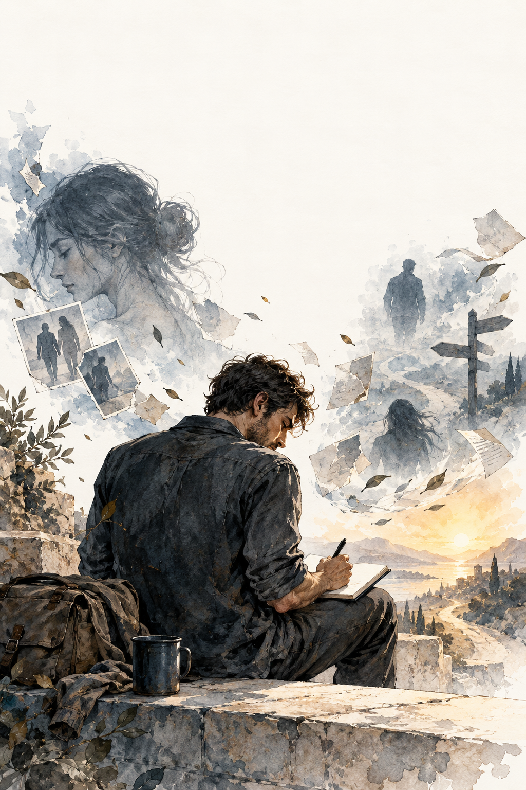

Una guía gratuita
Manual para no perderse después del amor
Escrito mientras el dolor todavía estaba ahí. Un recorrido por la pérdida, la culpa, la fe y las pequeñas decisiones con las que alguien vuelve a encontrarse.
Lectura gratuita · 43 páginas en PDF · EPUB adaptable a tu pantalla

Un cuaderno escrito durante el proceso
Estas páginas nacieron en días de miedo y dudas. No ofrecen una fórmula para dejar de sufrir. Reúnen escenas y aprendizajes de alguien que intentó sostenerse, pedir ayuda y construir una vida más propia.
Si alguna vez te has sentido perdido después de una relación, quizás encuentres aquí compañía para los días que vienen después.
«No escribí esta guía para enseñar a otros cómo superar el dolor. La escribí para no olvidar al hombre en el que me convertí mientras lo atravesaba».